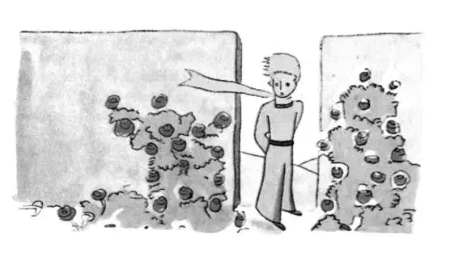

CHAPTER 20
第二十章
—the little prince discovers a garden of roses
——小王子发现玫瑰园
But it happened that after walking for a long time through sand, and rocks, and snow, the little prince at last came upon a road. And all roads lead to the abodes of men.
穿过沙漠、石头和冰雪，小王子最后来到了一条路上。所有的路都通向人类居住的地方。
"Good morning," he said.
“早上好。”他说。
He was standing before a garden, all abloom with roses.
他站在一座花园前，花园里全是盛开的玫瑰。
"Good morning," said the roses.
“早上好。”玫瑰说。

The little prince gazed at them. They all looked like his flower.
小王子凝视着它们。它们和他的花儿没什么两样。
"Who are you?" he demanded, thunderstruck.
“你们是谁？”他问道，惊呆了。
"We are roses," the roses said.
“我们是玫瑰。”玫瑰说。
And he was overcome with sadness. His flower had told him that she was the only one of her kind in all the universe. And here were five thousand of them, all alike, in one single garden!
他忍不住悲伤起来。他的花儿曾告诉他，她是全世界独一无二的。而在这儿，一个园子里就有五千朵和她一模一样的花。
"She would be very much annoyed," he said to himself, "if she should see that... she would cough most dreadfully, and she would pretend that she was dying, to avoid being laughed at. And I should be obliged to pretend that I was nursing her back to life—for if I did not do that, to humble myself also, she would really allow herself to die...”
“她会非常懊恼的，”他自言自语地说，“如果她看到这些……她会咳嗽得更厉害；为了不被嘲笑，会假装自己快死了。而我，也会不得不假装照料她，让她好起来——因为如果我不那样做，不屈膝照顾她的话，她就真的会让自己死去……”
Then he went on with his reflections: "I thought that I was rich, with a flower that was unique in all the world; and all I had was a common rose. A common rose, and three volcanoes that come up to my knees—and one of them perhaps extinct forever... that doesn't make me a very great prince..."
然后，他又继续沉思：“我以前认为我很富有，拥有一朵全世界独一无二的花；可我所拥有的只不过是一朵普普通通的玫瑰而已。一朵普通的玫瑰，三座只有我膝盖那么高的火山——其中有一座可能永远死了的火山……这并没有让我成为一个了不起的王子……”
And he lay down in the grass and cried.
于是，他躺在草丛里哭了起来。